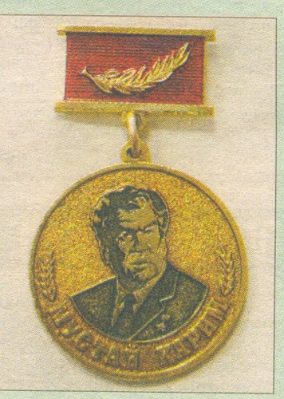

Памятная медаль «Мустай Карим»

К 90-летию со дня рождения народного поэта Башкортостана Мустая Карима Башкирское Республиканское отделение Педагогического общества Российской Федерации учредило памятную медаль «Мустай Карим», для награждения лиц, имеющих заслуги в изучении и пропаганде наследия народного поэта..